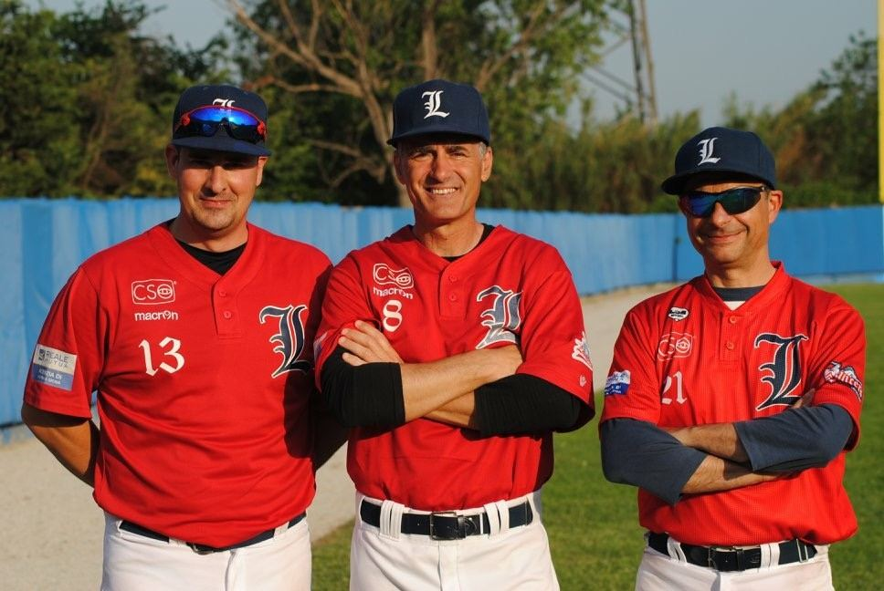
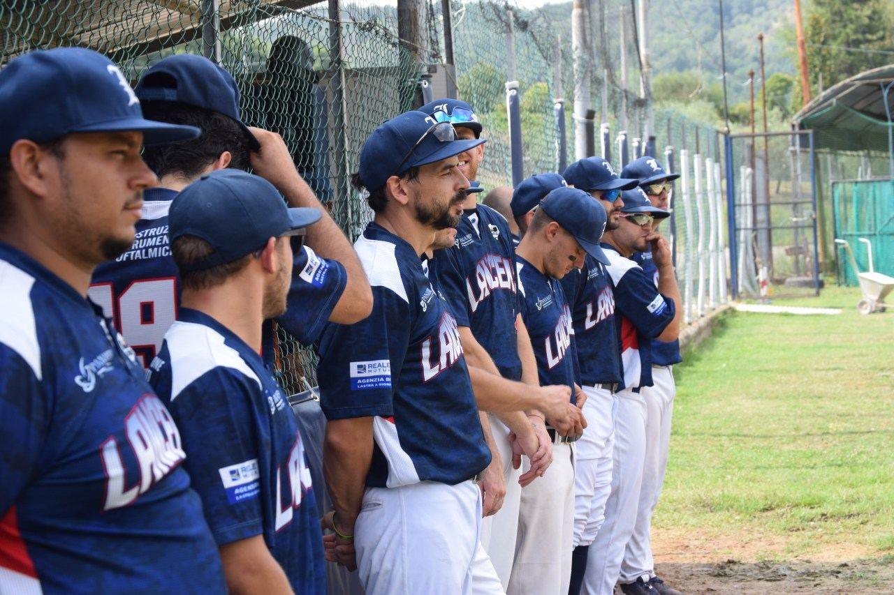

La stagione 2018 della prima squadra dei Lancers Baseball, militante nel campionato di Serie B nazionale, è terminata lo scorso Settembre con lo storico terzo posto nel girone e decimo posto su quaranta squadre partecipanti al campionato, massimo risultato ottenuto dalla società lastrigiana sino ad oggi.
A onor del vero questo gruppo avrebbe potuto ottenere di più ma inutile guardarsi indietro contando ancora una volta le sconfitte terminate con il minimo scarto, sconfitte amare ma giuste, ha vinto il migliore in quel momento.
Si guarda avanti in casa Lancers, lo sguardo punta dritto alla stagione 2019!
Iniziamo il percorso di avvicinamento confermando anche per la prossima stagione il gruppo di tecnici che ha guidato la squadra in quest’ultima avventura: Marco Rosellini, Alessandro Barbieri e Daniele Ciappi.
Qualche settimana fa hanno riunito la squadra per le prime comunicazioni ufficiali.
La novità più importante riguarda proprio il trio, l’ormai ex manager Rosellini lascia al collega Barbieri la guida della squadra sostituendolo come Coach, un cambio interno come si direbbe allo scorer durante una partita.
Una scelta sofferta ma dovuta e che Barbieri ha accettato a patto di continuare il lavoro con gli stessi colleghi.
Quindi, squadra che vince non si cambia, questo vale anche per i nostri tecnici i quali hanno il merito di aver portato in una sola stagione molti miglioramenti al gruppo sia dal punto di vista tecnico che di mentalità fuori e dentro il diamante.

L’attacco non è stato il punto di forza di questa squadra, certamente qualche sconfitta si sarebbe potuta evitare con una valida al momento giusto.
La caratteristica principale invece è stata la difesa, prima su quaranta squadre con una percentuale di .959 e solamente 58 errori difensivi commessi.
Una difesa che ha sostenuto un monte strepitoso che si è posizionato ben quinto tra tutte le squadre della Serie B; una media pgl di 2.90 con una attacco concesso di .238.
Questi traguardi sono stati raggiunti grazie al grande lavoro svolto da questo Staff Tecnico e dal costante impegno messo in campo dai nostri atleti che hanno vista ripagata la fiducia riposta in queste persone.
Siamo quindi felici di avere anche per la stagione 2019 questi tecnici che porteranno la squadra a nuovi traguardi e speriamo sempre più successi.
La squadra ha ripreso dalla scorsa settimana gli allenamenti sia in palestra che sul campo con un programma intenso che prevede parte atletica e tecnica.
Dal punto di vista di mercato non ci sono ancora notizie ufficiali in entrata mentre salutiamo e facciamo un grande in bocca al lupo ad Arberim Rudaj che non giocherà con i Lancieri nella prossima stagione dopo due anni trascorsi sul Lancers Field: continua a lavorare duro e con il sorriso Arbi!